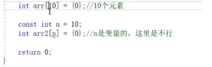
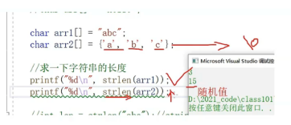
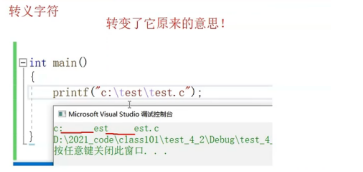

# 初识 C 语言
# 什么是 C 语言？
C 语言是一种通用的、面向过程式的计算机程序设计语言。1972 年，为了移植与开发 UNIX 操作系统，丹尼斯・里奇在贝尔电话实验室设计开发了 C 语言。
C 语言是一种广泛使用的计算机语言，它与 Java 编程语言一样普及，二者在现代软件程序员之间都得到广泛使用。
# 第一个 C 语言项目
新建源文件（源文件：xxx.c 头文件 xxxx.h）
// 写代码 | |
//1、写出主函数（main 函数） | |
//main 函数 程序的入口 | |
//printf 库函数 在屏幕上打印信息 | |
//printf 使用 需要引用头文件 stdio.h | |
// 运行快捷键 ctrl+f5 | |
#include<stdio.h> | |
int main() | |
{ | |
printf("helloworld"); | |
return 0; | |
} |
# 初识数据类型
char // 字符类型 1 byte
int // 整型 2 byte
short // 短整型 4 byte
long // 长整型 4 byte
long long // 更长的整型 8 byte
float // 单精度浮点型 4 byte
double // 双精度浮点型 8 byte
printf("%d\n", 100);// 打印一个整数 -% d | |
// \n 起刷新缓冲区的作用 换行 |
# 初识常量变量
常量 ：不能改变的量
变量：能被改变的量
int main() | |
{ | |
// 创建变量 | |
// 类型 变量名 = 值；推荐 | |
// 类型 变量名； 不推荐 | |
int age = 20; | |
return 0; | |
//% d - 整型 | |
//%f -float | |
//%lf-double | |
} |
全局变量和局部变量
当局部变量和全局变量冲突的情况下，局部优先。
写代码时不建议把全局变量和局部变量名字写成一样的。
int a = 100; | |
int main() | |
{ | |
// 局部变量 | |
int a = 10; | |
printf("%d\n", a);//10 | |
return 0; | |
} |
// 写一个代码 求两个整数的和 | |
//scanf 函数 - 输入函数 | |
int main() | |
{ | |
int a = 0; | |
int b = 0; | |
int sum = 0; | |
scanf("%d %d",&a,&b); | |
sum = a + b; | |
printf("sum = %d\n", sum); | |
return 0; | |
} |
这里引用 scanf 函数会报错
解决办法 - 1、在源文件第一行添加 #define _CRT_SECURE_NO_WARNINGS A
2、安装目录下的 D:\DevelopToops\Microsoft Visual Studio\2022\Community\Common7\IDE\VC\VCProjectItems
管理员权限打开 添加这句话 -- 以后创建新的源文件上面会自动创建
# 初识变量的作用域和生命周期
作用域
局部变量：变量所在的局部范围
全局变量：整个工程（但在别的 xx.c 文件中需要声明一下)
extern int g_val;// 声明变量 |
生命周期：变量的创建和和销毁之间的时间段
局部变量的生命周期：进入局部范围生命开始，出局部范围生命结束
全局变量的生命周期：程序的生命周期
# 常量
1、字面常量
//1、字面常量 | |
3.14; | |
10; | |
'a'; | |
'afsf'; |
2、const 修饰的常变量
num 被 const 修饰后变成常变量 - 具有常属性（不能被改变的属性）
本质上还是变量，不能作为常量
还是报错
A
3、#define 定义的标识符常量
#define MAX 1000 | |
int n = MAX; | |
printf("%d\n", n);//1000 |
4、枚举常量
可以一 一列举的常量
// 性别 | |
enum Sex | |
{ | |
// 这种枚举类型的变量的未来可能取值 | |
MALE, | |
FEMALE, | |
SECRET | |
}; | |
int main() | |
{ | |
//4、枚举常量 | |
enum Sex s = MALE; | |
return 0; | |
} |
枚举常量的值从 0 开始 不可更改 但可以赋初值
# 初识字符串
字符串就是一串字符 - 用双引号括起来的一串字符
注：字符串的结束标志是一个 \0 的转义字符。在计算字符串长度的时候 \0 是结束标志，不算作字符串内容.
字符串的结尾隐藏了一个 \0 的字符

# 初识转义字 符
符
 符
符转义字符

# 注释
1、代码中有不需要的代码可以直接删除，也可以注释掉
2、代码中有些代码比较难懂，可以加一下注释文字
//int a = 10;//C++ 注释风格 - 可以支持单行和多行注释 --- 常用 | |
/* | |
int b = 0； | |
*/ | |
//C 语言注释风格 -- 不支持嵌套注释 |
# 初识选择语句
if（条件 1）
输出
else
输出
int main() | |
{ | |
int input = 0;// 输入的值 | |
printf("加入比特"); | |
printf("那要好好学习吗（1/0）"); | |
scanf("%d", &input); | |
if (input == 1) | |
printf("好offer\n"); | |
else | |
printf("卖红薯\n"); | |
return 0; | |
} |
# 循环语句
while (结束条件)
{
输出
}
int main() | |
{ | |
int line = 0; | |
while (line < 3000) | |
{ | |
printf("写代码:%d\n", line); | |
line++; | |
} | |
if (line == 3000) | |
{ | |
printf("好offer\n"); | |
} | |
return 0; | |
} |
# 初识函数 & 数组
函数：
函数是一组一起执行一个任务的语句。
Add(int x, int y) | |
{ | |
int z = 0; | |
z = x + y; | |
return z; | |
} | |
int main() | |
{ | |
int num1 = 0; | |
int num2 = 0; | |
scanf("%d%d", &num1, &num2); | |
int sum = Add(num1, num2); | |
printf("%d\n", sum); | |
return 0; | |
} |
数组：
一组相同类型元素的集合
int main() | |
{ | |
int arr[10] = { 1,2,3,4,5,6,7,8,9,0 }; | |
char ch[5] = { 'a','b','c' };// 不完全初始化，剩余默认为 0 | |
// 取值 | |
arr[0];//1 | |
int i = 0; | |
while (i < 10) | |
{ | |
printf("%d", arr[i]); | |
i++; | |
} | |
} |
# 初识操作符
移位操作符 <<>>
左移乘 2 右移除 2
https://blog.csdn.net/weixin_57525369/article/details/121286993
# 常见关键字
# define 定义常量和宏
define 定义宏的参数进行的是替换
// 1、define 定义标志符常量 | |
#define MAX 1000 | |
//2、define 定义宏 | |
#define ADD(X,Y)X+Y | |
int main() | |
{ | |
printf("%d\n", ADD(2, 3));//5 | |
printf("%d\n", 4*ADD(2, 3));//4*2+3=11 | |
return 0; | |
} |
# 初识指针
int main() | |
{ | |
int a = 10;//a 在内存中要分配空间 - 4 个字节 | |
printf("%p\n", &a);//% p 专门用来打印地址 | |
int* pa = &a;//pa 是用来存放地址的，在 c 语言中 pa 叫作指针变量 | |
//* 说明 pa 是指针变量 | |
//int 说明 pa 执行的对象是 int 类型 | |
char ch = "w"; | |
char* pc = &ch; | |
return 0; | |
} |
进入调试：
F10 --> 窗口 ---> 内存
int main() | |
{ | |
int a = 10; | |
int* pa = &a; | |
*pa = 20;//* 解引用操作 *pa 就是通过 pa 里面的地址找到 a | |
printf("%d\n", a);//20 | |
return 0; | |
} |
# 初识结构体
java 中的对象类
struct Stu | |
{ | |
char name[20];// 成员变量 | |
int age; | |
double score; | |
}; | |
int main() | |
{ | |
struct Stu s = { "张三",20,88.5 };// 结构体的创建和初始化 | |
printf("%s %d %lf", s.name, s.age, s.score); | |
struct Stu* ps = &s; | |
printf("%s %d %lf\n", (*ps).name, (*ps).age, (*ps).score); | |
printf("%s %d %lf\n", ps->age, ps->age, ps->score); | |
return 0; | |
} |
# 进阶
# 分支语句
三种结构：顺序结构 选择结构 循环结构
c 语言如何表达真和假？ 非 0 就是真，0 就是假
# if 语句
#include <stdio.h> | |
int main() | |
{ | |
if(表达式) | |
{ | |
语句列表1； | |
} | |
else | |
{ | |
语句列表2； | |
} | |
return 0; | |
} |
int main() | |
{ | |
int age = 170; | |
if (age < 18) | |
printf("少年\n"); | |
else if (age >= 18 && age < 26) | |
printf("青年\n"); | |
else if (age >= 40 && age < 60) | |
printf("中年\n"); | |
else if (age >= 60 && age < 100) | |
printf("老年\n"); | |
else | |
printf("老不死\n"); | |
return 0; | |
} |
# 悬空 if
else 和距离它最近的 if 匹配
#include <stdio.h> | |
int main() | |
{ | |
int a = 0; | |
int b = 2; | |
if(a == 1) | |
if(b == 2) | |
printf("hehe\n"); | |
else | |
printf("haha\n");// 输出这个 | |
return 0; | |
} |
# 代码风格
// 代码 1 | |
if (condition) { | |
return x; | |
} | |
return y; | |
// 代码 2 | |
if(condition) | |
{ | |
return x; | |
} | |
else | |
{ | |
return y; | |
} | |
// 代码 3 | |
int num = 1; | |
if(num == 5) | |
{ | |
printf("hehe\n"); | |
} | |
// 代码 4 | |
int num = 1; | |
if(5 == num)// 如果错写成一个等号，编译时会报错提醒 | |
{ | |
printf("hehe\n"); | |
} |
代码 2 和代码 4 更好，逻辑更加清晰，不容易出错。
# 练习
\1. 判断一个数是否为奇数
\2. 输出 1-100 之间的奇数
# switch 语句
常用于多分支的情况
语法：
switch(整型表达式) | |
{ | |
case 整形常量表达式: | |
语句; | |
} |
#include <stdio.h> | |
int main() | |
{ | |
int day = 0; | |
switch(day) | |
{ | |
case 1： | |
printf("星期一\n"); | |
break; | |
case 2: | |
printf("星期二\n"); | |
break; | |
case 3: | |
printf("星期三\n"); | |
break; | |
case 4: | |
printf("星期四\n"); | |
break; | |
case 5: | |
printf("星期五\n"); | |
break; | |
case 6: | |
printf("星期六\n"); | |
break; | |
case 7: | |
printf("星期天\n"); | |
break; | |
} | |
return 0; | |
} |
- 输入 1-5，输出的是 “weekday”; 2. 输入 6-7，输出 “weekend”
#include <stdio.h> | |
//switch 代码演示 | |
int main() | |
{ | |
int day = 0; | |
switch(day) | |
{ | |
case 1： | |
case 2: | |
case 3: | |
case 4: | |
case 5: | |
printf("weekday\n"); | |
break; | |
case 6: | |
case 7: | |
printf("weekend\n"); | |
break; | |
} | |
return 0; | |
} |
注：
在最后一个 case 语句的后面加上一条 break 语句。 （之所以这么写是可以避免出现在以前的最后一个 case 语句后面忘了添加 break 语句）。
# default 子句
default： 写在任何一个 case 标签可以出现的位置。 当 switch 表达式的值并不匹配所有 case 标签的值时，这个 default 子句后面的语句就会执行。 所以，每个 switch 语句中只能出现一条 default 子句。 但是它可以出现在语句列表的任何位置，而且语句流会像执行一个 case 标签一样执行 default 子句。
#include <stdio.h> | |
int main() | |
{ | |
int n = 1; | |
int m = 2; | |
switch (n) | |
{ | |
case 1: | |
m++; | |
case 2: | |
n++; | |
case 3: | |
switch (n) | |
{//switch 允许嵌套使用 | |
case 1: | |
n++; | |
case 2: | |
m++; | |
n++; | |
break; | |
} | |
case 4: | |
m++; | |
break; | |
default: | |
break; | |
} | |
printf("m = %d, n = %d\n", m, n);//m=5,n=3 | |
return 0; | |
} |
# 循环语句
# while 语句
# 语法：
//while 语法结构 | |
while(表达式) | |
循环语句; |
在屏幕上打印 1-10
#include <stdio.h> | |
int main() | |
{ | |
int i = 1; | |
while(i<=10) | |
{ | |
printf("%d ", i); | |
i = i+1; | |
} | |
return 0; | |
} |
# break
其实在循环中只要遇到 break，就停止后期的所有的循环，直接终止循环。 所以：while 中的 break 是用于永久终止循环的。
//break 代码实例 | |
#include <stdio.h> | |
int main() | |
{ | |
int i = 1; | |
while(i<=10) | |
{ | |
if(i == 5) | |
break; | |
printf("%d ", i); | |
i = i+1; | |
} | |
return 0; | |
} |
# continue
continue 是用于终止本次循环的，也就是本次循环中 continue 后边的代码不会再执行， 而是直接跳转到 while 语句的判断部分。进行下一次循环的入口判断.
//continue 代码实例 1 | |
#include <stdio.h> | |
int main() | |
{ | |
int i = 1; | |
while(i<=10) | |
{ | |
if(i == 5) | |
continue; | |
printf("%d ", i); | |
i = i+1; | |
} | |
return 0; | |
} |
//continue 代码实例 2 | |
#include <stdio.h> | |
int main() | |
{ | |
int i = 1; | |
while(i<=10) | |
{ | |
i = i+1; | |
if(i == 5) | |
continue; | |
printf("%d ", i); | |
} | |
return 0; | |
} |
# for
# 语法
for(表达式1; 表达式2; 表达式3) | |
循环语句; |
表达式 1
表达式 1 为初始化部分，用于初始化循环变量的。
表达式 2
表达式 2 为条件判断部分，用于判断循环时候终止。
表达式 3
表达式 3 为调整部分，用于循环条件的调整。
#include <stdio.h> | |
int main() | |
{ | |
int i = 0; | |
//for (i=1/* 初始化 */; i<=10/* 判断部分 */; i++/* 调整部分 */) | |
for(i=1; i<=10; i++) | |
{ | |
printf("%d ", i); | |
} | |
return 0; | |
} |
# for 和 while 比较
int i = 0; | |
// 实现相同的功能，使用 while | |
i=1;// 初始化部分 | |
while(i<=10)// 判断部分 | |
{ | |
printf("hehe\n"); | |
i = i+1;// 调整部分 | |
} | |
// 实现相同的功能，使用 while | |
for(i=1; i<=10; i++) | |
{ | |
printf("hehe\n"); | |
} |
可以发现在 while 循环中依然存在循环的三个必须条件，但是由于风格的问题使得三个部分很可能偏离较 远，这样 查找修改就不够集中和方便。所以，for 循环的风格更胜一筹；for 循环使用的频率也最高。
# break && continue
// 代码 1 | |
#include <stdio.h> | |
int main() | |
{ | |
int i = 0; | |
for(i=1; i<=10; i++) | |
{ | |
if(i == 5) | |
break; | |
printf("%d ",i); | |
} | |
return 0; | |
} | |
// 代码 2 | |
#include <stdio.h> | |
int main() | |
{ | |
int i = 0; | |
for(i=1; i<=10; i++) | |
{ | |
if(i == 5) | |
continue; | |
printf("%d ",i); | |
} | |
return 0; | |
} |
# 注意
- 不可在 for 循环体内修改循环变量，防止 for 循环失去控制。
- 建议 for 语句的循环控制变量的取值采用 “前闭后开区间” 写法。
int i = 0; | |
// 前闭后开的写法 | |
for(i=0; i<10; i++) | |
{} | |
// 两边都是闭区间 | |
for(i=0; i<=9; i++) | |
{} |
# for 循环变种
#include <stdio.h> | |
int main() | |
{ | |
// 代码 1 | |
for(;;) | |
{ | |
printf("hehe\n"); | |
} | |
//for 循环中的初始化部分，判断部分，调整部分是可以省略的，但是不建议初学时省略，容易导致问题。 | |
// 代码 2 | |
int i = 0; | |
int j = 0; | |
// 这里打印多少个 hehe? | |
for(i=0; i<10; i++) | |
{ | |
for(j=0; j<10; j++) | |
{ | |
printf("hehe\n"); | |
} | |
} | |
// 代码 3 | |
int i = 0; | |
int j = 0; | |
// 如果省略掉初始化部分，这里打印多少个 hehe? | |
for(; i<10; i++) | |
{ | |
for(; j<10; j++) | |
{ | |
printf("hehe\n"); | |
} | |
} | |
// 代码 4 - 使用多余一个变量控制循环 | |
int x, y; | |
for (x = 0, y = 0; x<2 && y<5; ++x, y++) | |
{ | |
printf("hehe\n"); | |
} | |
return 0; | |
} |
# do while
# 语法
do | |
循环语句; | |
while(表达式); |
循环至少执行一次，使用的场景有限，所以不是经常使用。
#include <stdio.h> | |
int main() | |
{ | |
int i = 10; | |
do | |
{ | |
printf("%d\n", i); | |
}while(i<10); | |
return 0; | |
} |
# break && continue
#include <stdio.h> | |
int main() | |
{ | |
int i = 10; | |
do | |
{ | |
if(5 == i) | |
break; | |
printf("%d\n", i); | |
}while(i<10); | |
return 0; | |
} | |
#include <stdio.h> | |
int main() | |
{ | |
int i = 10; | |
do | |
{ | |
if(5 == i) | |
continue; | |
printf("%d\n", i); | |
}while(i<10); | |
return 0; | |
} |
# 函数
-
库函数
-
自定义函数
# 库函数
为什么会有库函数？
-
我们知道在我们学习 C 语言编程的时候，总是在一个代码编写完成之后迫不及待的想知道结果，想 把这个结果打印到我们的屏幕上看看。这个时候我们会频繁的使用一个功能：将信息按照一定的格 式打印到屏幕上（printf）。
-
. 在编程的过程中我们会频繁的做一些字符串的拷贝工作（strcpy）。
-
在编程是我们也计算，总是会计算 n 的 k 次方这样的运算（pow）。 像上面我们描述的基础功能，它们不是业务性的代码。我们在开发的过程中每个程序员都可能用的到， 为了支持可移植性和提高程序的效率，所以 C 语言的基础库中提供了一系列类似的库函数，方便程序员 进行软件开发。 那怎么学习库函数呢？
这里我们简单的看看：www.cplusplus.com
简单的总结，C 语言常用的库函数都有：
- IO 函数
- 字符串操作函数
- 字符操作函数
- 内存操作函数
- 时间 / 日期函数
- 数学涵数
- 其他库函数
我们参照文档，学习几个库函数：(教会学生怎么使用文档来学习库函数)。
注： 但是库函数必须知道的一个秘密就是：使用库函数，必须包含 #include 对应的头文件。 这里对照文档来学习上面几个库函数，目的是掌握库函数的使用方法。
# 自定义函数
如果库函数能干所有的事情，那还要程序员干什么？
所有更加重要的是自定义函数。 自定义函数和库函数一样，有函数名，返回值类型和函数参数。 但是不一样的是这些都是我们自己来设计。这给程序员一个很大的发挥空间。
函数的组成：
ret_type fun_name(para1, * ) | |
{ | |
statement;// 语句项 | |
} | |
ret_type 返回类型 | |
fun_name 函数名 | |
para1 函数参数 |
写一个函数可以找出两个整数中的最大值
#include <stdio.h> | |
//get_max 函数的设计 | |
int get_max(int x, int y) | |
{ | |
return (x>y)?(x):(y); | |
} | |
int main() | |
{ | |
int num1 = 10; | |
int num2 = 20; | |
int max = get_max(num1, num2); | |
printf("max = %d\n", max); | |
return 0; | |
} |
# 函数的参数
实参：
真实传给函数的参数，叫实参。 实参可以是：常量、变量、表达式、函数等。 无论实参是何种类型的量，在进行函数调用时，它们都必须有确定的值，以便把这些值传送给形 参。
形参：
形式参数是指函数名后括号中的变量，因为形式参数只有在函数被调用的过程中才实例化（分配内 存单 元），所以叫形式参数。形式参数当函数调用完成之后就自动销毁了。因此形式参数只在函数中有 效。
# 函数的调用
# 传值调用
函数的形参和实参分别占有不同内存块，对形参的修改不会影响实参。
# 传址调用
传址调用是把函数外部创建变量的内存地址传递给函数参数的一种调用函数的方式。
这种传参方式可以让函数和函数外边的变量建立起真正的联系，也就是函数内部可以直接操 作函数外部的变量。
# 练习
- 写一个函数可以判断一个数是不是素数。
- 写一个函数判断一年是不是闰年。
- 写一个函数，实现一个整形有序数组的二分查找。
- 写一个函数，每调用一次这个函数，就会将 num 的值增加 1。
# 函数的嵌套调用和链式访问
函数和函数之间可以根据实际的需求进行组合的，也就是互相调用的。
# 嵌套调用
函数可以嵌套调用，但是不能嵌套定义。
#include <stdio.h> | |
void new_line() | |
{ | |
printf("hehe\n"); | |
} | |
void three_line() | |
{ | |
int i = 0; | |
for(i=0; i<3; i++) | |
{ | |
new_line(); | |
} | |
} | |
int main() | |
{ | |
three_line(); | |
return 0; | |
} |
# 链式访问
把一个函数的返回值作为另外一个函数的参数。
#include <stdio.h> | |
#include <string.h> | |
int main() | |
{ | |
char arr[20] = "hello"; | |
int ret = strlen(strcat(arr,"bit"));// 这里介绍一下 strlen 函数 | |
printf("%d\n", ret); | |
return 0; | |
} | |
#include <stdio.h> | |
int main() | |
{ | |
printf("%d", printf("%d", printf("%d", 43)));//4321 | |
// 结果是啥？ | |
// 注：printf 函数的返回值是打印在屏幕上字符的个数 | |
return 0; | |
} |
# 函数的声明和定义
# 函数的声明
- 告诉编译器有一个函数叫什么，参数是什么，返回类型是什么。但是具体是不是存在，函数 声明决定不了。
- 函数的声明一般出现在函数的使用之前。要满足先声明后使用。
- 函数的声明一般要放在头文件中的。
# 函数的定义
函数的定义是指函数的具体实现，交待函数的功能实现。
test.h 的内容 放置函数的声明
#ifndef __TEST_H__ | |
#define __TEST_H__ | |
// 函数的声明 | |
int Add(int x, int y); | |
#endif //__TEST_H__ |
test.c 的内容 放置函数的实现
#include "test.h" | |
// 函数 Add 的实现 | |
int Add(int x, int y) | |
{ | |
return x+y; | |
} |
# 函数的递归
# 什么是递归？
程序调用自身的编程技巧称为递归（ recursion）。 递归做为一种算法在程序设计语言中广泛应用。 一个过程或函数在其定义或说明中有直接或间接 调用自身的 一种方法，它通常把一个大型复杂的问题层层转化为一个与原问题相似的规模较小的问题来求解， 递归策略 只需少量的程序就可描述出解题过程所需要的多次重复计算，大大地减少了程序的代码量。 递归的主要思考方式在于：把大事化小
# 递归的两个必要条件
存在限制条件，当满足这个限制条件的时候，递归便不再继续。
每次递归调用之后越来越接近这个限制条件。
# 练习
接受一个整型值（无符号），按照顺序打印它的每一位。 例如： 输入：1234，输出 1 2 3 4.
#include <stdio.h> | |
void print(int n) | |
{ | |
if(n>9) | |
{ | |
print(n/10); | |
} | |
printf("%d ", n%10); | |
} | |
int main() | |
{ | |
int num = 1234; | |
print(num); | |
return 0; | |
} |
求 n 的阶乘。（不考虑溢出）
int factorial(int n) | |
{ | |
if(n <= 1) | |
return 1; | |
else | |
return n * factorial(n-1); | |
} |
求第 n 个斐波那契数。（不考虑溢出）
int count = 0;// 全局变量 | |
int fib(int n) | |
{ | |
if(n == 3) | |
count++; | |
if (n <= 2) | |
return 1; | |
else | |
return fib(n - 1) + fib(n - 2); | |
} |
# 数组
# 一维数组
# 数组的创建
数组是一组相同类型元素的集合。
type_t arr_name [const_n]; | |
//type_t 是指数组的元素类型 | |
//const_n 是一个常量表达式，用来指定数组的大小 |
// 代码 1 | |
int arr1[10]; | |
// 代码 2 | |
int count = 10; | |
int arr2[count];// 数组时候可以正常创建？ | |
// 代码 3 | |
char arr3[10]; | |
float arr4[1]; | |
double arr5[20]; |
注：数组创建，在 C99 标准之前， [] 中要给一个常量才可以，不能使用变量。在 C99 标准支持了变长数 组的概念。
# 数组的初始化
数组的初始化是指，在创建数组的同时给数组的内容一些合理初始值（初始化）。
int arr1[10] = {1,2,3}; | |
int arr2[] = {1,2,3,4}; | |
int arr3[5] = {1，2，3，4，5}； | |
char arr4[3] = {'a',98, 'c'}; | |
char arr5[] = {'a','b','c'}; | |
char arr6[] = "abcdef"; |
数组在创建的时候如果想不指定数组的确定的大小就得初始化。数组的元素个数根据初始化的内容来确 定。
但是对于下面的代码要区分，内存中如何分配。
char arr1[5] = "abc";//a b c \0 0 | |
char arr2[] = "abc";//a b c \0 | |
char arr3[3] = {'a','b','c'};//a b c |
# 一维数组的使用
#include <stdio.h> | |
int main() | |
{ | |
int arr[10] = {0};// 数组的不完全初始化 | |
// 计算数组的元素个数 | |
int sz = sizeof(arr)/sizeof(arr[0]); | |
// 对数组内容赋值，数组是使用下标来访问的，下标从 0 开始。所以： | |
int i = 0;// 做下标 | |
for(i=0; i<10; i++)// 这里写 10，好不好？ | |
{ | |
arr[i] = i; | |
} | |
// 输出数组的内容 | |
for(i=0; i<10; ++i) | |
{ | |
printf("%d ", arr[i]); | |
} | |
return 0; | |
} |
- 数组是使用下标来访问的，下标是从 0 开始。
- 数组的大小可以通过计算得到。
# 一维数组在内存中的存储
#include <stdio.h> | |
int main() | |
{ | |
int arr[10] = {0}; | |
int i = 0; | |
int sz = sizeof(arr)/sizeof(arr[0]); | |
for(i=0; i<sz; ++i) | |
{ | |
printf("&arr[%d] = %p\n", i, &arr[i]); | |
} | |
return 0; | |
} |
数组在内存中是连续存放的。
# 二维数组
# 二维数组的创建
// 数组创建 | |
int arr[3][4]; | |
char arr[3][5]; | |
double arr[2][4]; |
# 二维数组的初始化
// 数组初始化 | |
int arr[3][4] = {1,2,3,4}; | |
int arr[3][4] = <!--swig0-->; | |
int arr[][4] = <!--swig1-->;// 二维数组如果有初始化，行可以省略，列不能省略 |
# 二维数组的使用
#include <stdio.h> | |
int main() | |
{ | |
int arr[3][4] = {0}; | |
int i = 0; | |
for(i=0; i<3; i++) | |
{ | |
int j = 0; | |
for(j=0; j<4; j++) | |
{ | |
arr[i][j] = i*4+j; | |
} | |
} | |
for(i=0; i<3; i++) | |
{ | |
int j = 0; | |
for(j=0; j<4; j++) | |
{ | |
printf("%d ", arr[i][j]); | |
} | |
} | |
return 0; | |
} |
# 二维数组在内存中的存储
#include <stdio.h> | |
int main() | |
{ | |
int arr[3][4]; | |
int i = 0; | |
for(i=0; i<3; i++) | |
{ | |
int j = 0; | |
for(j=0; j<4; j++) | |
{ | |
printf("&arr[%d][%d] = %p\n", i, j,&arr[i][j]); | |
} | |
} | |
return 0; | |
} |
二维数组在内存中也是连续存储的。
# 数组越界
数组的下标是有范围限制的。 数组的下规定是从 0 开始的，如果数组有 n 个元素，最后一个元素的下标就是 n-1。 所以数组的下标如果小于 0，或者大于 n-1，就是数组越界访问了，超出了数组合法空间的访问。 C 语言本身是不做数组下标的越界检查，编译器也不一定报错，但是编译器不报错，并不意味着程序就 是正确的， 所以程序员写代码时，最好自己做越界的检查。
#include <stdio.h> | |
int main() | |
{ | |
int arr[10] = {1,2,3,4,5,6,7,8,9,10}; | |
int i = 0; | |
for(i=0; i<=10; i++) | |
{ | |
printf("%d\n", arr[i]);// 当 i 等于 10 的时候，越界访问了 | |
} | |
return 0; | |
} |
二维数组的行和列也可能存在越界。
# 数组作为函数参数
数组名是数组首元素的地址。（有两个例外）
int arr[10] = {0}; | |
printf("%d\n", sizeof(arr));//00DDFD6C | |
printf("%d\n", &arr[0]);//00DDFD6C |
- sizeof (数组名)，计算整个数组的大小，sizeof 内部单独放一个数组名，数组名表示整个数 组。
- & 数组名，取出的是数组的地址。& 数组名，数组名表示整个数组。
除此 1,2 两种情况之外，所有的数组名都表示数组首元素的地址。
// 冒泡排序 | |
// 方法 2 | |
void bubble_sort(int arr[], int sz)// 参数接收数组元素个数 | |
{ | |
int sz = sizeof(arr)/sizeof(arr[0]); | |
int i = 0; | |
for(i=0; i<sz-1; i++) | |
{ | |
int j = 0; | |
for(j=0; j<sz-i-1; j++) | |
{ | |
if(arr[j] > arr[j+1]) | |
{ | |
int tmp = arr[j]; | |
arr[j] = arr[j+1]; | |
arr[j+1] = tmp; | |
} | |
} | |
} | |
} | |
int main() | |
{ | |
int arr[] = {3,1,7,5,8,9,0,2,4,6}; | |
int sz = sizeof(arr)/sizeof(arr[0]); | |
bubble_sort(arr, sz);// 是否可以正常排序？ | |
for(i=0; i<sz; i++) | |
{ | |
printf("%d ", arr[i]); | |
} | |
return 0; | |
} |
# 操作符详解
https://blog.csdn.net/weixin_57525369/article/details/121286993
# 指针
# 指针是什么？
指针就是地址，口语中说的指针通常指的是指针变量。-----> 内存
指针变量 ：
我们可以通过 &（取地址操作符）取出变量的内存其实地址，把地址可以存放到一个变量中，这个 变量就是指针变量
#include <stdio.h> | |
int main() | |
{ | |
int a = 10;// 在内存中开辟一块空间 | |
int *p = &a;// 这里我们对变量 a，取出它的地址，可以使用 & amp; 操作符。 | |
//a 变量占用 4 个字节的空间，这里是将 a 的 4 个字节的第一个字节的地址存放在 p 变量 | |
中，p就是一个之指针变量。 | |
return 0; | |
} |
指针变量，用来存放地址的变量。（存放在指针中的值都被当成地址处理）。
指针是用来存放地址的，地址是唯一标示一块地址空间的。
指针的大小在 32 位平台是 4 个字节，在 64 位平台是 8 个字节
# 指针和指针类型
char *pc = NULL; | |
int *pi = NULL; | |
short *ps = NULL; | |
long *pl = NULL; | |
float *pf = NULL; | |
double *pd = NULL; |
指针的定义方式是： type + * 。
char* 类型的指针是为了存放 char 类型变量的地址。
short* 类型的指针是为了存放 short 类型变量的地址。
int* 类型的指针是为了存放 int 类型变量的地址。
# 指针 + 整数
#include <stdio.h> | |
// 演示实例 | |
int main() | |
{ | |
int n = 10; | |
char *pc = (char*)&n; | |
int *pi = &n; | |
printf("%p\n", &n); | |
printf("%p\n", pc); | |
printf("%p\n", pc+1); | |
printf("%p\n", pi); | |
printf("%p\n", pi+1); | |
return 0; | |
} |
总结：指针的类型决定了指针向前或者向后走一步有多大（距离）。
# 指针的解引用
// 演示实例 | |
#include <stdio.h> | |
int main() | |
{ | |
int n = 0x11223344; | |
char *pc = (char *)&n; | |
int *pi = &n; | |
*pc = 0; // 重点在调试的过程中观察内存的变化。 | |
*pi = 0; // 重点在调试的过程中观察内存的变化。 | |
return 0; | |
} |
总结：
指针的类型决定了，对指针解引用的时候有多大的权限（能操作几个字节）。
比如： char* 的指针解引用就只能访问一个字节，而 int* 的指针的解引用就能访问四个字节。
# 野指针
概念： 野指针就是指针指向的位置是不可知的（随机的、不正确的、没有明确限制的）
# 野指针产生
- 指针未初始化
#include <stdio.h> | |
int main() | |
{ | |
// 这里的 p 就是野指针 | |
int *p;// 局部变量指针未初始化，默认为随机值 | |
*p = 20;// 非法访问内存 | |
return 0; | |
} |
- 指针越界访问
#include <stdio.h> | |
int main() | |
{ | |
int arr[10] = {0}; | |
int *p = arr; | |
int i = 0; | |
for(i=0; i<=11; i++) | |
{ | |
// 当指针指向的范围超出数组 arr 的范围时，p 就是野指针 | |
*(p++) = i; | |
} | |
return 0; | |
} |
- 指针指向的空间释放
# 如何避免野指针
- 指针初始化
- 小心指针越界
- 指针指向空间释放即使置 NULL
- 避免返回局部变量的地址
- 指针使用之前检查有效性
# 指针运算
指针 +- 整数
指针 - 指针
指针的关系运算
# 指针 +- 整数
#define N_VALUES 5 | |
float values[N_VALUES]; | |
float *vp; | |
// 指针 +- 整数；指针的关系运算 | |
for (vp = &values[0]; vp < &values[N_VALUES];) | |
{ | |
*vp++ = 0; | |
} |
# 指针 - 指针
int my_strlen(char *s) | |
{ | |
char *p = s; | |
while(*p != '\0' ) | |
p++; | |
return p-s; | |
} |
# 指针的关系运算
for(vp = &values[N_VALUES-1]; vp >= &values[0];vp--) | |
{ | |
*vp = 0; | |
} |
标准规定：
允许指向数组元素的指针与指向数组最后一个元素后面的那个内存位置的指针比较，但是不允许与 指向第一个元素之前的那个内存位置的指针进行比较。
# 指针和数组
数组名表示的是数组首元素的地址。（2 种情况除外，数组章节讲解了）
那么这样写代码是可行的：
int arr[10] = {1,2,3,4,5,6,7,8,9,0}; | |
int *p = arr;//p 存放的是数组首元素的地址 |
既然可以把数组名当成地址存放到一个指针中，我们使用指针来访问一个就成为可能。
#include <stdio.h> | |
int main() | |
{ | |
int arr[] = {1,2,3,4,5,6,7,8,9,0}; | |
int *p = arr; // 指针存放数组首元素的地址 | |
int sz = sizeof(arr)/sizeof(arr[0]); | |
for(i=0; i<sz; i++) | |
{ | |
printf("&arr[%d] = %p <====> p+%d = %p\n", i, &arr[i], i, p+i); | |
} | |
return 0; | |
} |
所以 p+i 其实计算的是数组 arr 下标为 i 的地址。 那我们就可以直接通过指针来访问数组。
int main() | |
{ | |
int arr[] = { 1, 2, 3, 4, 5, 6, 7, 8, 9, 0 }; | |
int *p = arr; // 指针存放数组首元素的地址 | |
int sz = sizeof(arr) / sizeof(arr[0]); | |
int i = 0; | |
for (i = 0; i<sz; i++) | |
{ | |
printf("%d ", *(p + i)); | |
} | |
return 0; | |
} |
# 二级指针
指针变量也是变量，是变量就有地址，那指针变量的地址存放在哪里？ 这就是 二级指针 。
对于二级指针的运算有：
*ppa 通过对 ppa 中的地址进行解引用，这样找到的是 pa ， *ppa 其实访问的就是 pa .
int b = 20; | |
*ppa = &b;// 等价于 pa = &b; |
**ppa 先通过 *ppa 找到 pa , 然后对 pa 进行解引用操作： *pa ，那找到的是 a
**ppa = 30; | |
// 等价于 * pa = 30; | |
// 等价于 a = 30; |
# 指针数组
指针数组是指针还是数组？ 答案：是数组。是存放指针的数组。 数组我们已经知道整形数组，字符数组。
int arr1[5]; | |
char arr2[6]; |
int* arr3[5];// 是什么？ |
arr3 是一个数组，有五个元素，每个元素是一个整形指针。
# 结构体
# 结构体的声明
结构是一些值的集合，这些值称为成员变量。结构的每个成员可以是不同类型的变量。
typedef struct Stu | |
{ | |
char name[20];// 名字 | |
int age;// 年龄 | |
char sex[5];// 性别 | |
char id[20];// 学号 | |
}Stu；// 分号不能丢 |
结构的成员可以是标量、数组、指针，甚至是其他结构体。
struct Point | |
{ | |
int x; | |
int y; | |
}p1; // 声明类型的同时定义变量 p1 | |
struct Point p2; // 定义结构体变量 p2 | |
// 初始化：定义变量的同时赋初值。 | |
struct Point p3 = {x, y}; | |
struct Stu // 类型声明 | |
{ | |
char name[15];// 名字 | |
int age; // 年龄 | |
}; | |
struct Stu s = {"zhangsan", 20};// 初始化 | |
struct Node | |
{ | |
int data; | |
struct Point p; | |
struct Node* next; | |
}n1 = {10, {4,5}, NULL}; // 结构体嵌套初始化 | |
struct Node n2 = {20, {5, 6}, NULL};// 结构体嵌套初始化 |
# 结构体成员访问
结构变量的成员是通过点操作符（.）访问的。点操作符接受两个操作数。
结构体指针访问指向变量的成员 有时候我们得到的不是一个结构体变量，而是指向一个结构体的指针。
struct S s; | |
strcpy(s.name, "zhangsan");// 使用。访问 name 成员 | |
s.age = 20;// 使用。访问 age 成员 | |
// 结构体指针访问指向变量的成员 | |
// 有时候我们得到的不是一个结构体变量，而是指向一个结构体的指针。 | |
struct Stu | |
{ | |
char name[20]; | |
int age; | |
}; | |
void print(struct Stu* ps) | |
{ | |
printf("name = %s age = %d\n", (*ps).name, (*ps).age); | |
// 使用结构体指针访问指向对象的成员 | |
printf("name = %s age = %d\n", ps->name, ps->age); | |
} | |
int main() | |
{ | |
struct Stu s = {"zhangsan", 20}; | |
print(&s);// 结构体地址传参 | |
return 0; | |
} |
# 结构体传参
struct S | |
{ | |
int data[1000]; | |
int num; | |
}; | |
struct S s = |